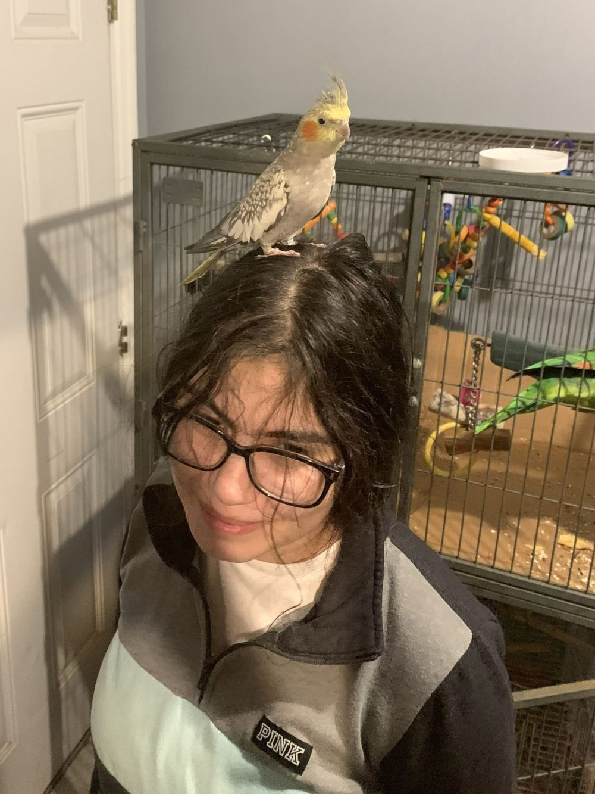

Introduction
Kelly J. Garcia | Kind Goldfish

Hi, my name is Kelly, and I am a computer science student. My concentration is in Information Technology. I transferred from Central Piedmont Community College after earning my associate degree.
- Personal Background: I am 22 years old, and I am a first-generation college student.
- Professional Background: I am a notary public.
- Academic Background: I am a transfer student from CPCC, where I earned my associate degree.
- Background in This Subject: None.
- Primary Work Computer: I use an HP Pavilion x360 laptop running Windows 11.
- Primary Work Location: I usually do my work on campus or from home, and sometimes at the public library or a cafe.
- Alternate Computer & Location: I can borrow my brother’s laptop, rent a laptop, or use a computer at the campus library. I can also work at a cafe.
-
Courses I’m Taking and Why:
- ITIS 3135 - Front End Web App Development: Taking this class to fulfill my concentration requirement.
- ITCS 3153 - Intro to Artificial Intelligence: Taking this class to fulfill my technical elective requirement.
- ITCS 3162 - Introduction to Data Mining: Taking this class to fulfill my technical elective requirement.
- ITIS 4010 - Topics in Software & Info Syst: Data Ethics: Taking this class to fulfill my technical elective requirement.
- ITIS 3200 - Intro to Info Security & Priv: Taking this class to fulfill my concentration requirement.
- BINF 3103 - Sequence Analysis: Taking this class to fulfill my technical elective requirement.
“All that we see or seem is but a dream within a dream.”
- Edgar Allan Poe